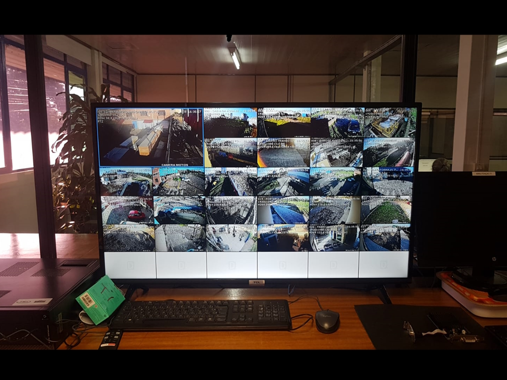

Born in Bento Gonçalves. I'm a friendly guy, extremely dedicated and committed to achieving my goals. I am always seeking knowledge and personal growth, and I face challenges with courage.
Welcome

I started my IT career in 2005, at a computing school as an intern, helping people who needed assistance with tasks on computers, such as schoolwork or minor maintenance..


HelpDesk
Over 10 years of experience in customer support.

IT Management
Experience in IT management, with over 3 years working in all aspects of management and planning.
Web Development
I graduated in System Development and Analysis, specializing in the development of web projects.
| Education |
|---|
| Degree in System Development and Analysis |
| Post Graduated on IT Management |
| Courses |
|---|
| Microsoft Office |
| Windows Server |
| PHP Course |
| C# Course |
| HTML Course |
| CSS Course |
| Computer Assembly and Maintenance |
| Knowledge |
|---|
| Help Desk |
| Telecom |
| SQL |
| C++ |
| Arduino |
| CCTV |
| Structured Cabling |
| IT Management |
| Complete maintenance of Computers and Notebooks |
A few job examples completed. Structured cabling, IT Racks organization, Network Topology, Computer Cleaning, CCTV and Network Documentation. Everything done following the good practices.

Rack organization
JBS - Brazil

Network Topology
JBS - Brazil

Workstation Organization
JBS - Brazil

Computer Cleaning
Before and After

CCTV Project
JBS - Brazil

Network Documentation
Making Maintenance Easier
Below is a video showing the final course project completed in 2015. A model using Arduino + Web Programming for a complete parking solution. The project was named FullParking Solutions, and the model was displayed on-site for a while. The video was recorded amateurishly with a cellphone and serves only to showcase the knowledge I possess.